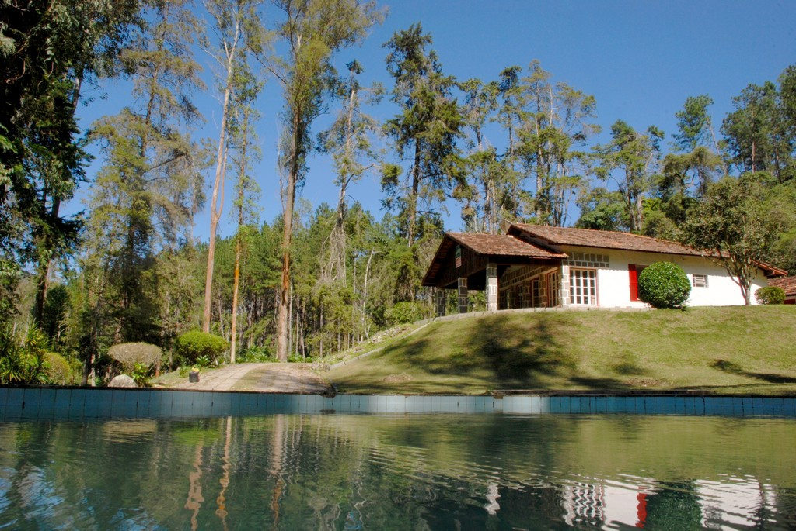
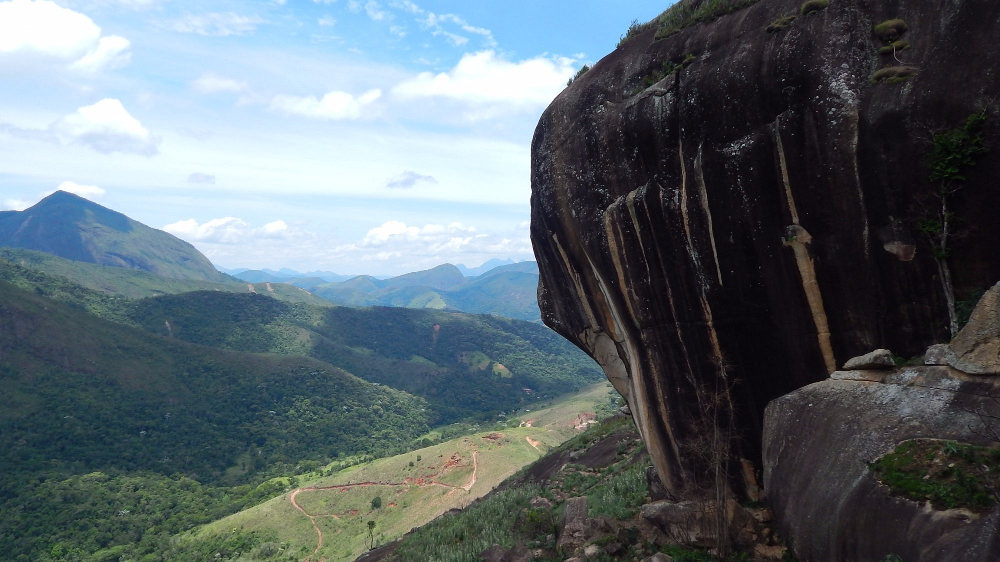
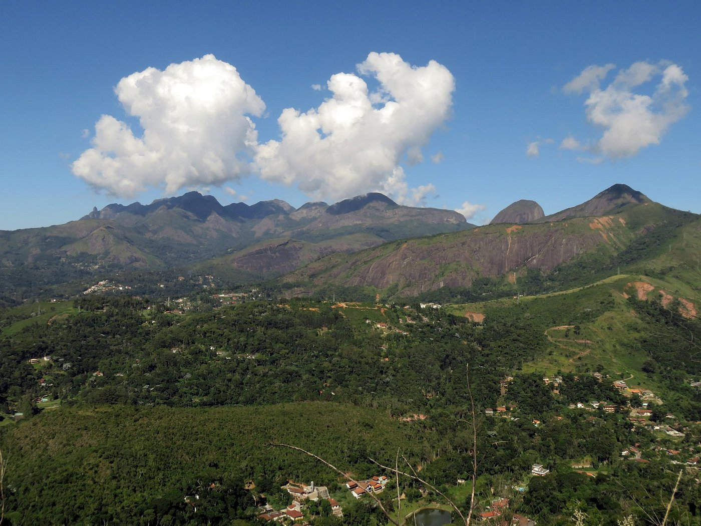

Trilhas
-

Trilha da Tartaruga:
A trilha com 650 metros de extensão e baixa dificuldade abrange o público em geral. O cume proporciona uma vista panorâmica com uma vasta cadeia de montanhas incluindo a Serra dos Órgãos e os Três Picos. É um local muito procurado por seu caráter contemplativo.
-

Trilha do Mirante do Cruzeiro:
A trilha para o Mirante do Cruzeiro em Teresópolis é uma caminhada de dificuldade moderada, com trechos mais íngremes, que leva a um mirante com vista para a cidade e o famoso cartão postal, o Dedo de Deus. A trilha faz parte da propriedade da Pousada Águas do Alto e há uma taxa de visitação
-

Trilha do Poço do Padeiro:
A trilha para o Poço do Padeiro em Teresópolis, também conhecido como Poço do Padre, é uma caminhada de nível fácil, com duração de aproximadamente 30 minutos, acessível a partir do Centro de Visitantes do Parque Nacional da Serra dos Órgãos em Guapimirim. O poço é famoso por uma pedra lisa que serve como escorrega natural para a água.